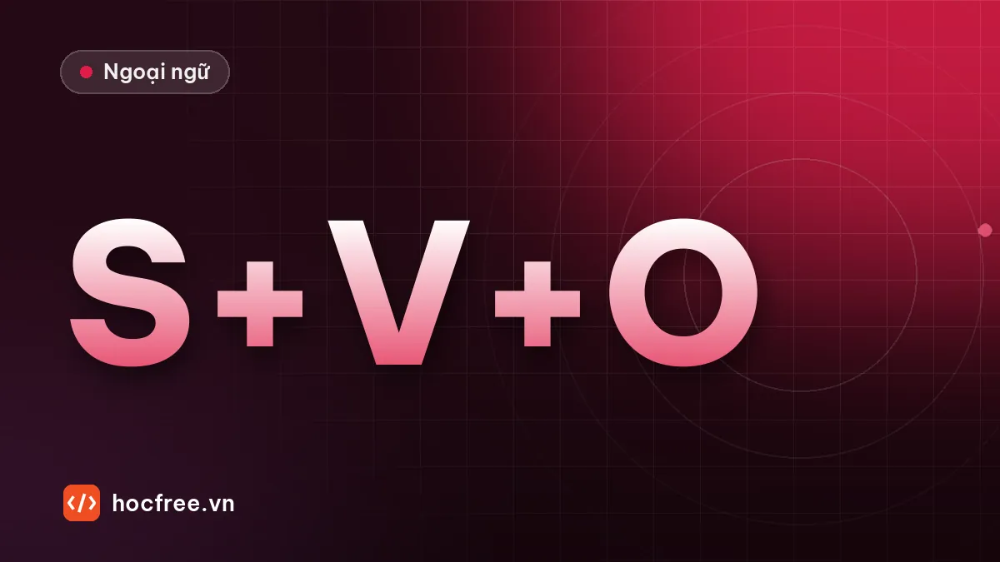

Cấu trúc câu tiếng Anh: tìm chủ ngữ và động từ chính
Năm mẫu câu cơ bản, nội động từ, ngoại động từ, động từ nối và cách gạt bỏ cụm giới từ để thấy ngay khung câu trong các câu TOEIC dài.

Học xong bài này, bạn sẽ
- Tìm chủ ngữ và động từ chính trong câu dài
- Phân biệt nội động từ, ngoại động từ và động từ nối
- Gạt cụm giới từ, mệnh đề phụ sang bên khi phân tích câu
Nên học trước: Giao tiếp: giới thiệu bản thân và công việc
Nội dung bài viết
Câu trong đề TOEIC, nhất là Part 5–7, thường dài 20–30 từ với nhiều cụm giới từ và mệnh đề phụ. Người học hay đọc từ trái sang phải, dịch từng chữ, rồi lạc giữa câu. Kỹ năng cần có là nhìn ra khung câu: ai làm gì, cái gì ra sao. Khi đã thấy khung, gần một nửa số câu Part 5 có thể giải mà không cần hiểu hết nghĩa.
Mỗi mệnh đề có một chủ ngữ và một động từ chia
Đây là quy tắc quan trọng nhất của bài:
- Chủ ngữ (S): danh từ, đại từ hoặc cụm danh từ đứng trước động từ: The new manager, Our customers, It.
- Động từ chia (V): động từ có thì, có hòa hợp với chủ ngữ: works, delivered, will review, has been approved.
- to review, reviewing, reviewed đứng một mình không phải động từ chia, chúng không làm động từ chính của mệnh đề được.
Một câu có hai động từ chia thì phải có từ nối (and, but, because, when, which, that…) để tạo thành hai mệnh đề.
Năm mẫu câu cơ bản
| Mẫu | Ví dụ | Ghi chú |
|---|---|---|
| S + V | The shipment arrived. | Nội động từ, không cần tân ngữ |
| S + V + O | Ms. Kim approved the budget. | Ngoại động từ, cần tân ngữ |
| S + V + C | The results are impressive. | Động từ nối + bổ ngữ (thường là tính từ) |
| S + V + O + O | We sent the client a quote. | Hai tân ngữ: người và vật |
| S + V + O + C | The board made him director. | Tân ngữ + bổ ngữ cho tân ngữ |
Nội động từ và ngoại động từ
Ngoại động từ cần tân ngữ ngay sau: discuss the issue (không có discuss about), attend the meeting (không có attend to the meeting theo nghĩa tham dự), contact the supplier, reach the office. Nội động từ không có tân ngữ trực tiếp, muốn nối danh từ phải dùng giới từ: arrive at, respond to, apply for, participate in, comply with.
Part 5 rất hay hỏi điều này: nếu ô trống đứng trước một danh từ mà không có giới từ, đáp án cần là ngoại động từ.
Động từ nối
be, become, seem, remain, appear, look, sound, stay, prove đi với tính từ, không đi với trạng từ: The process remains efficient (không phải efficiently). Đây là bẫy kinh điển của Part 5.
Kỹ thuật gạt bỏ để thấy khung câu
Muốn tìm S và V trong câu dài, hãy tạm "gạt" những phần sau sang bên:
- Cụm giới từ: in the warehouse, for the next quarter, of the department…
- Mệnh đề quan hệ: who joined last month, which was released in May…
- Cụm phân từ, to V làm bổ nghĩa: located near the airport, to reduce costs…
- Phần đặt giữa hai dấu phẩy: , however, / , according to the report,
Ví dụ:
The engineers
in the maintenance departmentwho were trained in Japanwill inspect the new machinesbefore the start of production.
Khung câu: The engineers will inspect the new machines. Chủ ngữ là engineers (số nhiều), không phải department hay Japan.
Ví dụ giải câu bằng khung
All employees who plan to attend the training session ______ register by Friday.
(A) to (B) should (C) having (D) registration
Xem đáp án
Gạt mệnh đề who plan to attend the training session, còn lại All employees ______ register by Friday. register là động từ nguyên mẫu nên cần trợ động từ hoặc động từ khuyết thiếu đứng trước: (B) should.
The report on customer satisfaction ______ that delivery times need to improve.
(A) showing (B) to show (C) shows (D) show
Xem đáp án
Câu chưa có động từ chia. Chủ ngữ là The report (số ít), on customer satisfaction là cụm giới từ. Đáp án (C) shows. (D) sai vì không hòa hợp với chủ ngữ số ít.
Bài tập
Tìm chủ ngữ chính và động từ chính trong mỗi câu.
1. The list of approved suppliers was updated last week.
2. Customers who purchase more than 100 units receive a 10% discount.
3. Located near the port, the new warehouse allows faster deliveries.
4. According to the latest survey, most staff members prefer flexible working hours.
5. The decision to postpone the product launch surprised many investors.
Xem đáp án
- S: The list – V: was updated (không phải suppliers were).
- S: Customers – V: receive. purchase là động từ của mệnh đề quan hệ.
- S: the new warehouse – V: allows. Located near the port là cụm phân từ.
- S: most staff members – V: prefer.
- S: The decision – V: surprised. to postpone the product launch bổ nghĩa cho decision.
6. Chọn đáp án: The new safety procedures appear ______ to most workers.
(A) clearly (B) clear (C) clarity (D) clarify
Xem đáp án
(B) clear. appear là động từ nối, theo sau là tính từ.
7. Câu nào sai và sửa thế nào? (a) We discussed about the schedule. (b) She replied to the email. (c) They reached to the factory at 9.
Xem đáp án
(a) sai: We discussed the schedule. (c) sai: They reached the factory at 9 (hoặc arrived at the factory). (b) đúng: reply là nội động từ, cần to.